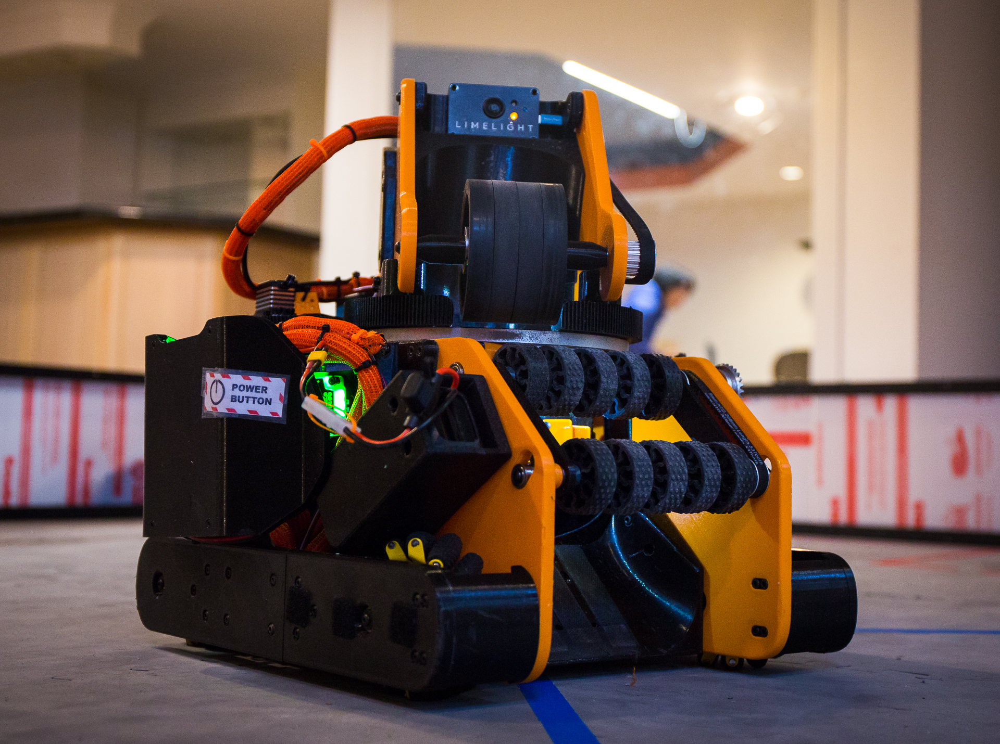
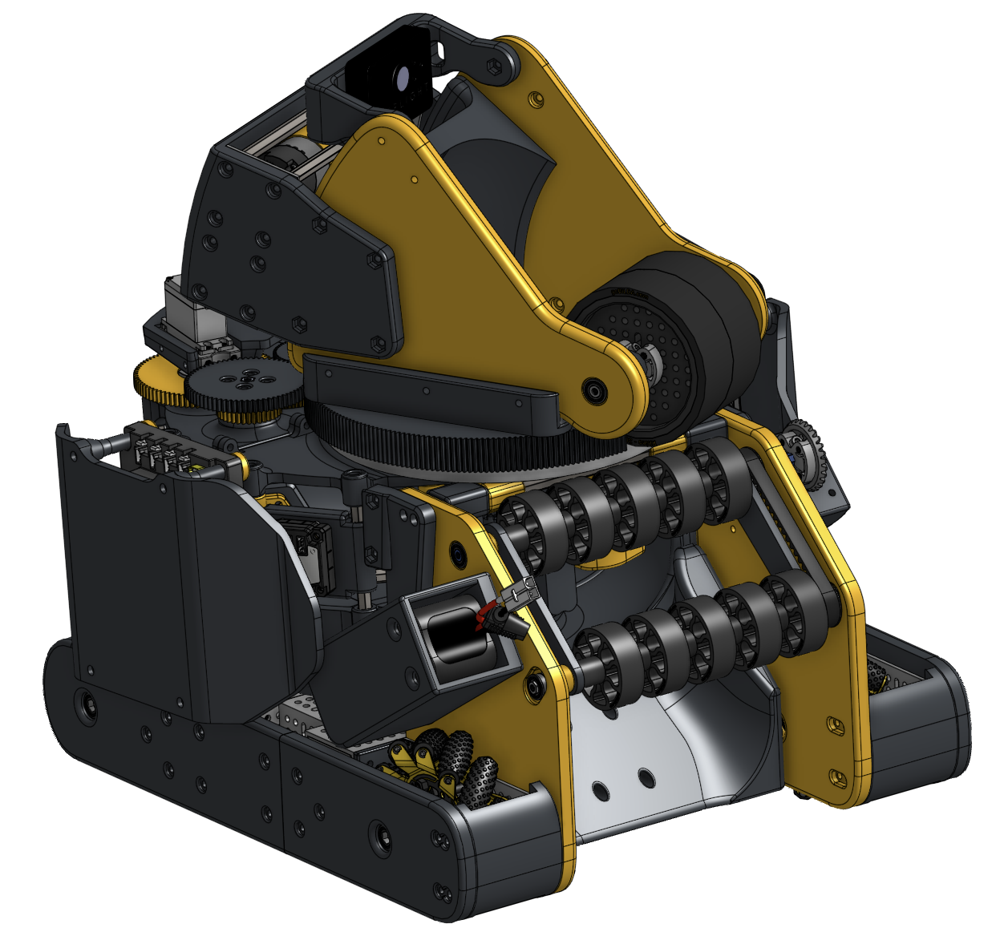
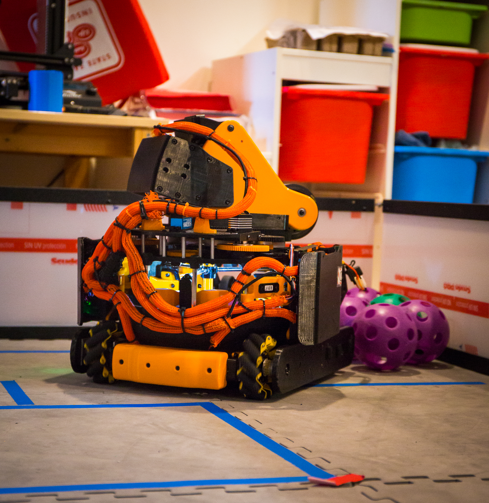
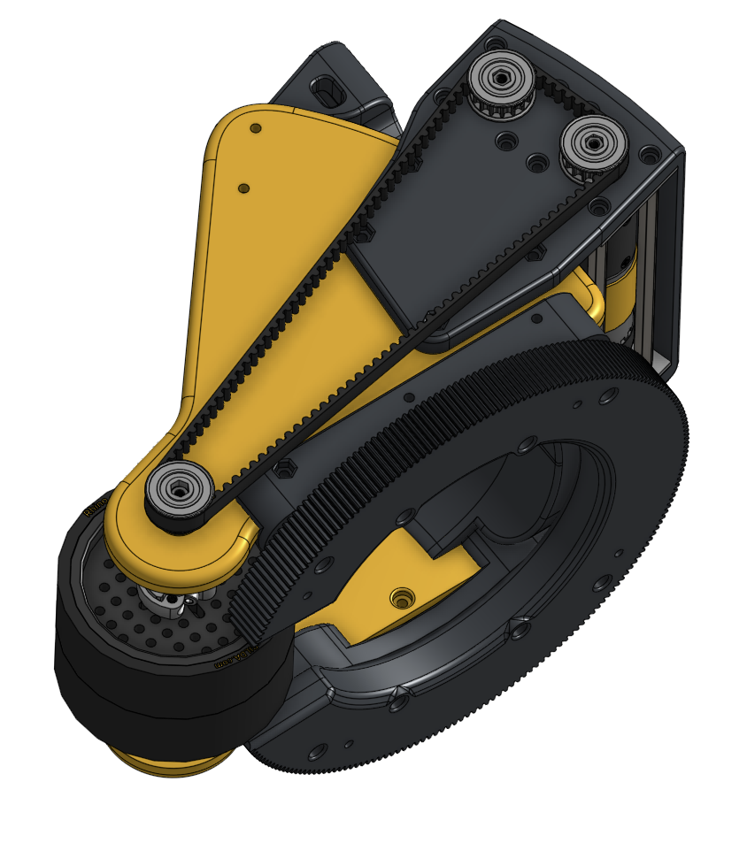
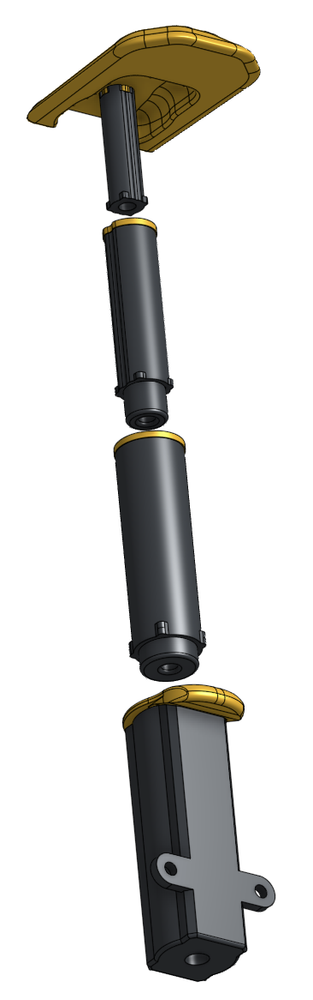
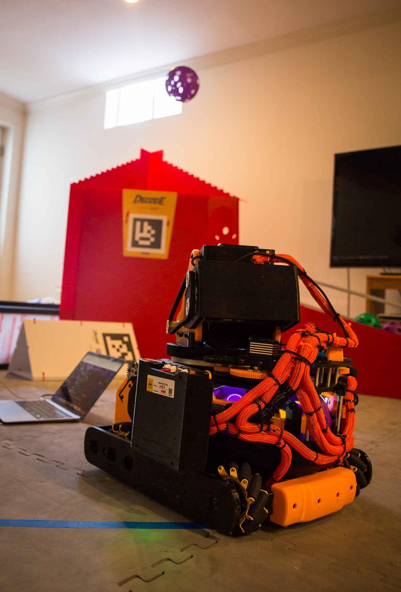
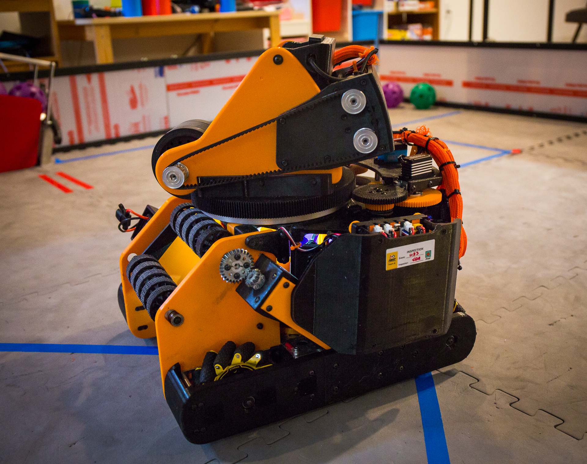
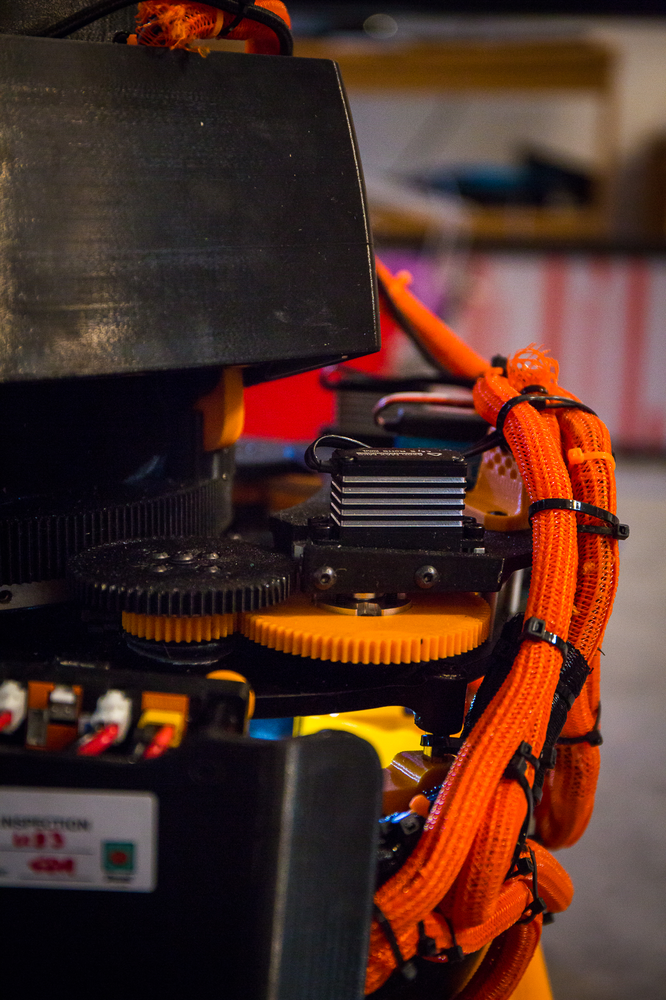

Mecanum drivetrain
Four mecanum wheels provide forward motion, strafing, and rotation. Seven goBILDA Yellow Jacket 312 RPM motors power the drivetrain, selected to balance speed, torque, and the available space.
FTC Decode / Competition robot
We designed and built a 33-pound robot for FTC Decode. It uses a mecanum drivetrain, a dual-flywheel launcher on a rotating turret, and a printed transfer mechanism to move game pieces.
The design uses 3D-printed parts to fit the mechanisms into a compact chassis and make revisions during testing. Wiring and components also needed to remain accessible for maintenance.

Interactive CAD
Load the model, then drag to rotate the robot and inspect how the mechanisms fit together. Scroll or pinch to zoom.
Optimized 3D preview / about 36.4 MB.
The model only downloads when you choose to load it.
01
The drivetrain, launcher, turret, and transfer share the chassis with the electronics and wiring. Their layout determines the space available for each mechanism and the access needed to service it.
Four mecanum wheels provide forward motion, strafing, and rotation. Seven goBILDA Yellow Jacket 312 RPM motors power the drivetrain, selected to balance speed, torque, and the available space.
Two 6000 RPM motors drive a dual-flywheel launcher. At about 5 mm of compression, it could reach roughly 30 ft. A two-servo turret turns about 180° so the launcher can aim without turning the whole robot.
A three-stage printed transfer extends more than 10 cm from an 8 cm retracted footprint. The basket mechanism uses a 3:1 servo reduction, giving it about 810° of rotation through the mechanism.
Two-wheel odometry, motor encoders, and Limelight vision provide position and targeting information for driving and aiming.

02
The build involved laying out the robot in CAD, fabricating custom parts, assembling the mechanisms, and adjusting them through testing and competition.
We arranged the drivetrain and scoring systems within a 439 × 425 × 440 mm robot, allowing space for structure, wiring, and service access.
The robot uses more than 150 custom parts. 3D printing over 70% made it practical to revise mounts, guides, and mechanism interfaces as we tested.
Assembly brought the drivetrain, launcher, turret, transfer, basket, odometry, and Limelight together in the chassis. The layout needed clearance for moving parts and access to electrical connections.
We tested the mechanisms under match conditions and revised parts between events as problems appeared.
03
Part fabrication, motor selection, and turret control were shaped by the available space and the requirements of each mechanism.
Printed mounts, guides, brackets, and mechanism parts could be revised and fabricated during testing. Parts subject to load or wear also needed to be accessible for replacement.
The drivetrain uses 312 RPM motors to balance wheel speed and torque. The launcher uses 6000 RPM motors for the flywheels.
The turret turns the launcher independently of the chassis, allowing the robot to adjust its aim while driving. The mechanism adds moving parts and requires coordination between driving and aiming.
04
The robot finished in roughly the top half of regional competition. The checks below outline how to evaluate drivetrain motion, shot consistency, and mechanism reliability.
Check straight-line speed, strafing, rotation, acceleration, and motor synchronization. Wheel alignment, symmetry, weight distribution, and interference all affect how a mecanum robot moves.
Track flywheel speed, compression, ball position, launch angle, battery voltage, and motor temperature to identify their effects on shot range and repeatability.
Check turret range, accuracy, backlash, and response, then watch the transfer for friction, jams, and inconsistent extension.
05





